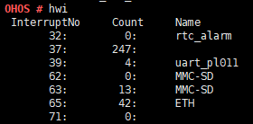

hwi¶
Command Function¶
This command is used to query information about the current interrupts.
Syntax¶
hwi
Parameter Description¶
None
Usage¶
Enter hwi to display the current interrupt ID, count of interrupts, and registered interrupt name.
If LOSCFG_CPUP_INCLUDE_IRQ is enabled, the processing time (cycles), CPU usage, and interrupt type of each interrupt are displayed.
Example¶
Enter hwi.
Output¶
Interrupt information (with LOSCFG_CPUP_INCLUDE_IRQ disabled)

Interrupt information (with LOSCFG_CPUP_INCLUDE_IRQ enabled)

Table 1 Output description
Parameter
Description
InterruptNo
Indicates the interrupt ID.
Count
Indicates the count of interrupts.
Name
Indicates the registered interrupt name.
CYCLECOST
Indicates the interrupt processing time (cycles).
CPUUSE
Indicates the CPU usage.
CPUUSE10s
Indicates CPU usage within the last 10 seconds.
CPUUSE1s
Indicates CPU usage within the last 1 second.
mode
Indicates the interrupt mode.
normal: non-shared interrupt.
shared: shared interrupt.